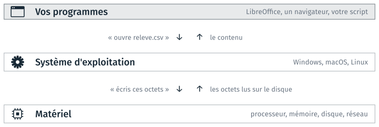
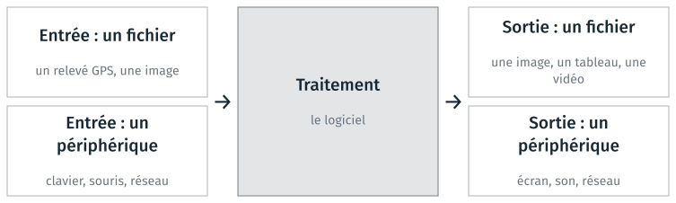
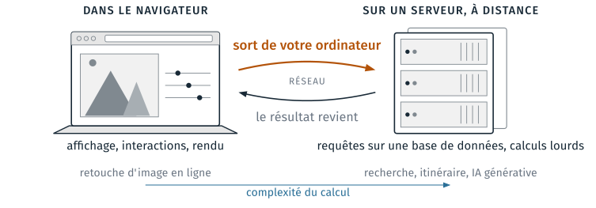
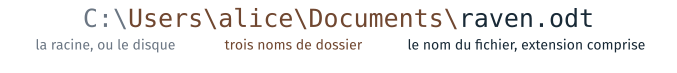
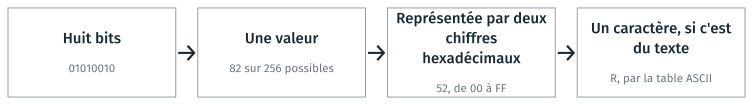
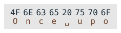

Logiciels et formats de fichier#
Cette partie définit ce qu’est un logiciel, le système d’exploitation sur lequel il s’appuie, les données qu’il lit et celles qu’il produit. Elle traite ensuite des fichiers, que le module emploie à chaque séance : leur chemin, leur extension et leur contenu. Deux TD l’accompagnent, le TD 1a et le TD 1b, facultatif ; ils sont présentés en fin de page.
Logiciel : définition et termes courants#
Logiciel
Ensemble des programmes, procédés et règles, et éventuellement de la documentation, relatifs au fonctionnement d’un ensemble de traitement de données.
Journal officiel du 22 septembre 2000, vocabulaire de l’informatique.
Parmi les termes de cette section, « logiciel » est le seul à avoir une définition officielle. Les termes courants qui suivent désignent chacun un type de logiciel, sans définition arrêtée ; leurs définitions d’usage sont dans le Grand dictionnaire terminologique de l’Office québécois de la langue française.
- Application
Logiciel qui sert à accomplir une tâche : un tableur, un navigateur, un logiciel de cartographie.
- App
Abréviation anglaise d’application, répandue par les magasins d’applications des téléphones. Le mot ne désigne pas une technologie particulière : le même logiciel existe souvent en site web, en programme de bureau et en application mobile.
- Webapp
Application qui s’utilise dans un navigateur. La section sur le lieu d’exécution y revient.
- OS
Operating system, le système d’exploitation : Windows, macOS, Linux.
- Driver
Le pilote d’un périphérique, qui permet au système d’exploitation de s’en servir.
Ces termes se rangent en deux familles. Le logiciel de base fait fonctionner la machine et donne accès au matériel : le système d’exploitation et les pilotes. Le logiciel d’application sert à accomplir une tâche : LibreOffice, Firefox, un lecteur de musique.
Le système d’exploitation#
Un programme ne s’adresse pas directement au matériel. Il demande au système d’exploitation d’ouvrir un fichier, de réserver de la mémoire ou d’envoyer des données sur le réseau, et le système d’exploitation transmet la demande au matériel.

Un programme passe par le système d’exploitation pour atteindre le matériel.#
Le système d’exploitation répartit aussi le processeur et la mémoire entre les programmes ouverts en même temps, et les isole les uns des autres : un programme ne peut pas écrire dans la mémoire d’un autre. Le même schéma vaut pour un téléphone, dont le système d’exploitation est Android ou iOS (environ 70 % et 30 % des téléphones dans le monde, StatCounter, 2026) ; Android est construit sur Linux.
Chaque système d’exploitation a ses propres conventions, et un même programme ne se comporte pas de la même façon sous Windows, macOS et Linux : les chemins de fichiers ne s’y écrivent pas pareil, et les outils installés diffèrent. Le matériel est traité au cours 5.
Entrées et sorties d’un logiciel#
Ce qu’un logiciel reçoit et ce qu’il produit sont de deux natures : un fichier, qui est conservé sur le disque, ou un flux de données échangé avec un périphérique, qui n’est pas conservé une fois lu ou affiché.

Les deux natures d’entrées et de sorties d’un logiciel.#
Le réseau est rangé parmi les périphériques, en entrée comme en sortie : les données reçues ou envoyées par le réseau ne sont pas conservées par le logiciel, sauf s’il les écrit dans un fichier. De même, ce qu’un programme garde en mémoire vive disparaît quand il s’arrête. Le module porte principalement sur les fichiers, parce qu’un fichier peut être relu, comparé, versionné, et ouvert par un autre logiciel.
Le lieu d’exécution d’une application web#
Des tâches qui demandaient un logiciel installé se font aujourd’hui dans un navigateur. Une application web répartit alors ses calculs entre deux machines : votre ordinateur, où le navigateur exécute une partie du programme, et un serveur distant. Pour les calculs faits sur le serveur, le navigateur envoie une requête par le réseau, et le serveur renvoie le résultat.

Ce qui se calcule dans le navigateur, et ce qui se calcule sur un serveur.#
La répartition entre calcul local et calcul distant dépend de la complexité du calcul et de l’endroit où se trouvent les données. Recadrer une image peut être réalisé facilement par le navigateur, sur l’ordinateur de l’utilisateur : l’image y est déjà, et le calcul est léger. Chercher dans l’index du web, calculer un itinéraire sur tout le réseau routier ou faire tourner un grand modèle de langage demande au contraire un serveur de calcul dédié, installé près des données : l’index du web, le graphe routier ou les paramètres du modèle sont bien trop volumineux pour un ordinateur personnel. Le cas le plus courant est la requête sur une base de données : la page envoie la question, et le serveur qui héberge la base renvoie les lignes qui correspondent.
La plupart des applications web combinent les deux. Une messagerie affiche les messages sur votre ordinateur, mais la recherche parmi eux se fait sur son serveur. Cette répartition évolue aussi : avec la puissance des ordinateurs personnels, des calculs faits sur un serveur il y a dix ans se font parfois dans le navigateur aujourd’hui. Pour une application donnée, la question pratique est de savoir quelles données sont envoyées au serveur, et à quel moment.
Utilité d’un fichier#
Un fichier conserve un résultat après l’arrêt du programme : un état de travail à reprendre, ou un document final à transmettre. Conserver un résultat dans un fichier sert à quatre choses, qui reviennent dès les premières semaines du module.
Ce qu’il permet |
Exemple |
|---|---|
Conserver un résultat |
relire dans une semaine ce que le programme a produit |
Passer d’un logiciel à l’autre |
le tableau écrit par l’un, ouvert par l’autre |
Changer de machine |
de votre poste à celui de la salle, et retour |
Le remettre à quelqu’un |
un rendu, ou le dépôt partagé du cours 2 |
Pour qu’un fichier écrit par un logiciel soit lu par un autre, les deux doivent respecter la même convention d’écriture : le format du fichier. Deux logiciels développés indépendamment peuvent ainsi échanger des données. La suite de la partie décrit comment désigner un fichier par son chemin, reconnaître son type et lire son contenu.
Le chemin d’un fichier#
Un chemin indique où trouver un fichier dans l’arborescence des dossiers. Il se lit de gauche à droite, de la racine au fichier ; chaque séparateur marque le passage d’un dossier à un dossier qu’il contient.

Les parties d’un chemin.#
Le mot |
Ce qu’il désigne dans l’exemple |
|---|---|
la racine, ou le disque |
|
un nom de dossier |
|
le nom du fichier |
|
le chemin du fichier |
l’ensemble, de la racine au fichier |
le dossier parent |
|
« Dossier parent » est le terme des messages d’erreur ; le cours 3 l’emploie sans le redéfinir.
L’écriture d’un chemin dépend du système d’exploitation : la racine, le séparateur de dossiers et le nom du dossier personnel changent. Le même fichier s’écrit ainsi :
C:\Users\alice\Documents\raven.odt
La racine est une lettre de disque, C:\ ; le séparateur est la barre
inversée \ (backslash) ; les dossiers personnels sont dans C:\Users\.
/Users/alice/Documents/raven.odt
La racine est / ; le séparateur est la barre / (slash) ; les dossiers
personnels sont dans /Users/.
/home/alice/Documents/raven.odt
La racine est / ; le séparateur est la barre / (slash) ; les dossiers
personnels sont dans /home/.
Un chemin absolu part de la racine. Un chemin relatif part du dossier
où l’on se trouve, le dossier courant. Dans l’arborescence suivante, les trois
chemins du tableau désignent le même fichier, raven.odt, depuis trois
endroits différents.
C:\Users\alice\
└─ cours1\
├─ 1a_formats\
│ └─ raven.odt
└─ 2b_erreurs\
└─ chemin.py
Le chemin de |
Depuis |
|
|---|---|---|
Absolu |
|
n’importe où |
Relatif |
|
|
Relatif qui remonte |
|
|
/Users/alice/
└─ cours1/
├─ 1a_formats/
│ └─ raven.odt
└─ 2b_erreurs/
└─ chemin.py
Le chemin de |
Depuis |
|
|---|---|---|
Absolu |
|
n’importe où |
Relatif |
|
|
Relatif qui remonte |
|
|
/home/alice/
└─ cours1/
├─ 1a_formats/
│ └─ raven.odt
└─ 2b_erreurs/
└─ chemin.py
Le chemin de |
Depuis |
|
|---|---|---|
Absolu |
|
n’importe où |
Relatif |
|
|
Relatif qui remonte |
|
|
Dans un chemin relatif, deux points, .., désignent le dossier parent, et un
point, ., le dossier courant. Ces notations sont les mêmes sur les trois
systèmes d’exploitation ; seul le séparateur qui les suit change.
Un programme ne connaît pas à l’avance le chemin absolu du dossier d’un
utilisateur. Il peut en revanche s’appuyer sur la position relative des
fichiers : chemin.py lit le dossier 1a_formats voisin, par un chemin qui remonte, ce qui fonctionne sur tout poste
où cours1 contient les mêmes dossiers. Un projet qui n’emploie que des
chemins relatifs se copie, se déplace et s’envoie sans modification ; un
chemin absolu écrit dans le code ne vaut que sur le poste où il a été écrit.
Le TD 2b fait corriger un chemin de ce genre.
Extension et type de fichier#
L”extension est la fin du nom d’un fichier, après le dernier point. Elle indique le type du fichier (du texte, une image, une vidéo), et le système d’exploitation s’en sert pour choisir le logiciel à lancer au double-clic.
Le nom et l’extension d’un fichier.#
ce qu’elle fait |
le système d’exploitation choisit le logiciel à lancer au double-clic |
ce qu’elle ne fait pas |
elle ne modifie aucun octet du fichier |
comment on la change |
en renommant le fichier, comme le reste du nom |
L’extension indique donc le contenu sans le garantir. Renommer un fichier
.odt en .pdf n’en fait pas un PDF, et le lecteur PDF le refuse. Un fichier
reçu avec une extension trompeuse, par erreur ou volontairement, contient
autre chose que ce qu’il annonce.
Avertissement
Windows masque par défaut les extensions des types qu’il connaît :
raven.odt s’affiche raven. Le réglage se change une fois, dans
l’explorateur : Affichage, Afficher, Extensions de noms de fichiers. Sous
macOS : Finder, Réglages, Avancé, « Afficher tous les suffixes de
fichiers ». Sans ce réglage, renommer un fichier ne montre pas l’extension
qu’on modifie.
Fichiers binaires et fichiers texte#
Tout fichier est une suite de bits, qui valent 0 ou 1, regroupés par
octets de huit. Un octet peut prendre 2⁸ = 256 valeurs, que les outils
écrivent avec deux chiffres hexadécimaux, de 00 à FF : la base seize
compte de 0 à 9 puis de A à F, et un chiffre hexadécimal représente
quatre bits.

Un octet, sa valeur, son écriture hexadécimale, et le caractère qu’il code dans un fichier texte.#
Un fichier est dit texte quand chacun de ses octets représente un caractère, et binaire sinon : ses octets ont alors le sens que leur donne son format. Tous les fichiers sont des suites de bits ; « binaire » signifie ici que le fichier n’est pas fait pour être lu caractère par caractère.
Fichier texte |
Fichier binaire |
|
|---|---|---|
Ses octets |
des caractères, tous |
ce que le format décide |
Qui le lit |
n’importe quel éditeur de texte |
le logiciel qui connaît le format |
Ce qu’on en fait |
le lire, le comparer, le versionner |
l’ouvrir dans son logiciel |
Cette différence revient dans tout le module : un fichier texte se compare ligne à ligne et se versionne avec git, un fichier binaire non. Le binaire et l’hexadécimal sont repris au cours 3.
Le fichier texte#
Un fichier texte est une suite de caractères, chacun codé par un ou
plusieurs octets selon une table d”encodage. Les huit premiers octets de
raven_une_ligne.txt, le fichier du TD 1a, codent le début du poème :

Les huit premiers octets de raven_une_ligne.txt ; ␣ représente l’espace.#
Deux tables d’encodage sont à connaître. ASCII code 128 caractères,
l’anglais sans accent : O vaut 4F, l’espace 20. UTF-8 code toutes
les langues : il reprend les valeurs d’ASCII à l’identique, et écrit les
autres caractères sur plusieurs octets, é sur deux. Les fichiers texte
d’aujourd’hui sont en UTF-8 ; les appeler « fichiers ASCII », comme le font
encore des documentations, est inexact. Les accents mal affichés, comme é
à la place de é, apparaissent quand un fichier écrit avec une table est lu
avec une autre.
Un fichier texte s’ouvre avec un éditeur de texte : le Bloc-notes, Notepad++, ou l’éditeur de code du module. L’éditeur affiche les caractères du fichier, et rien d’autre. Un traitement de texte ne convient pas : il enregistre sa propre mise en forme en plus des caractères.
Formats courants#
Le tableau donne, pour des extensions fréquentes, le type de contenu et la nature, texte ou binaire, du fichier.
Extension |
Contenu |
Texte ou binaire |
|---|---|---|
|
son, compressé avec perte |
binaire |
|
vidéo, le format le plus courant |
binaire |
|
photo, compressée avec perte |
binaire |
|
image, compressée sans perte |
binaire |
|
image vectorielle, décrite en XML |
texte |
|
image, y compris les images géoréférencées (GeoTIFF) |
binaire |
|
document mis en page |
binaire |
|
document LibreOffice : une archive ZIP de fichiers XML |
binaire |
|
classeur Excel : une archive ZIP de fichiers XML |
binaire |
|
tableau de valeurs séparées par des virgules |
texte |
|
archive de fichiers |
binaire |
|
programme Windows |
binaire |
|
code Python |
texte |
|
documentation en Markdown |
texte |
|
données, réglages |
texte |
|
réglages |
texte |
Six de ces seize formats sont du texte, et peuvent donc s’ouvrir dans un
éditeur, se comparer ligne à ligne et se versionner. Deux cas sont moins
évidents : un .svg est une image, écrite en texte ; un .csv est un
tableau, mais pas un fichier Excel. Les quatre derniers de la liste, .py,
.md, .json et .yaml, sont ceux que vous écrirez dans ce module. Les
.odt et .xlsx sont des archives compressées, donc binaires, qui
contiennent des fichiers texte ; le TD 1b en ouvre une.
TD de la partie#
TD 1a — Fichiers, formats et extensions, 20 minutes : exporter, copier, renommer et ouvrir les fichiers d’un même texte, pour comparer ce que décide l’extension et ce que contient le fichier.
TD 1b — Un .odt est une archive ZIP, facultatif, 12 minutes : ouvrir un document LibreOffice comme une archive, modifier son contenu dans un éditeur de texte, et le rouvrir.
Les TD des autres parties sont dans Travaux dirigés de la séance 1.